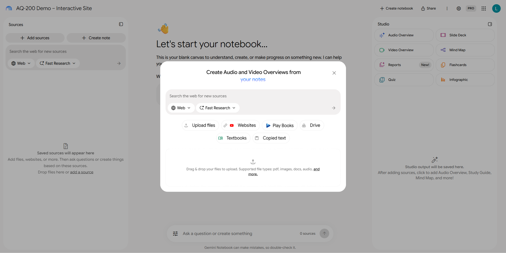
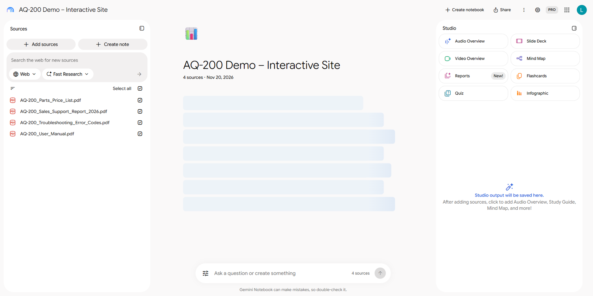
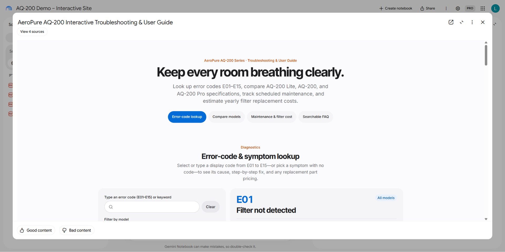
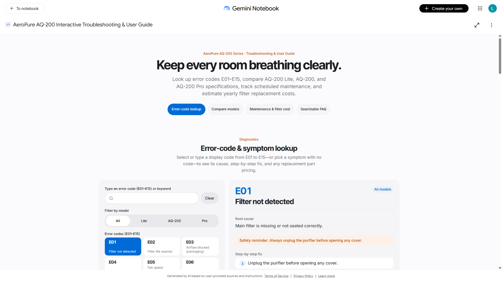
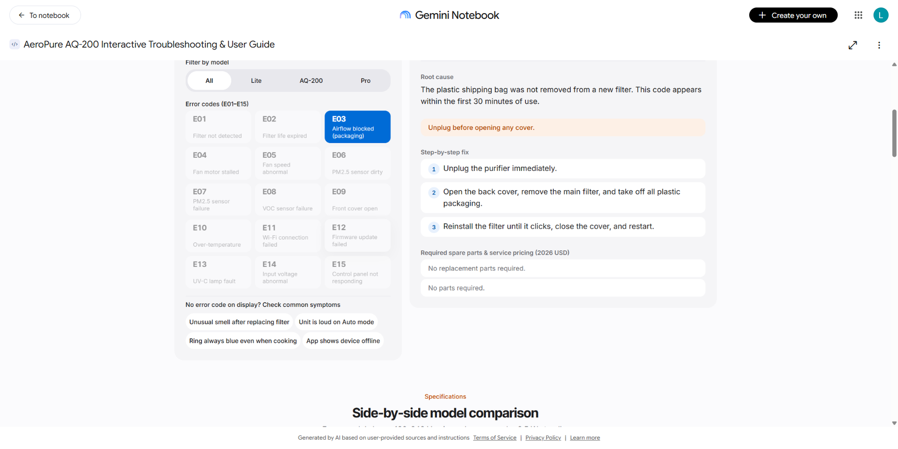
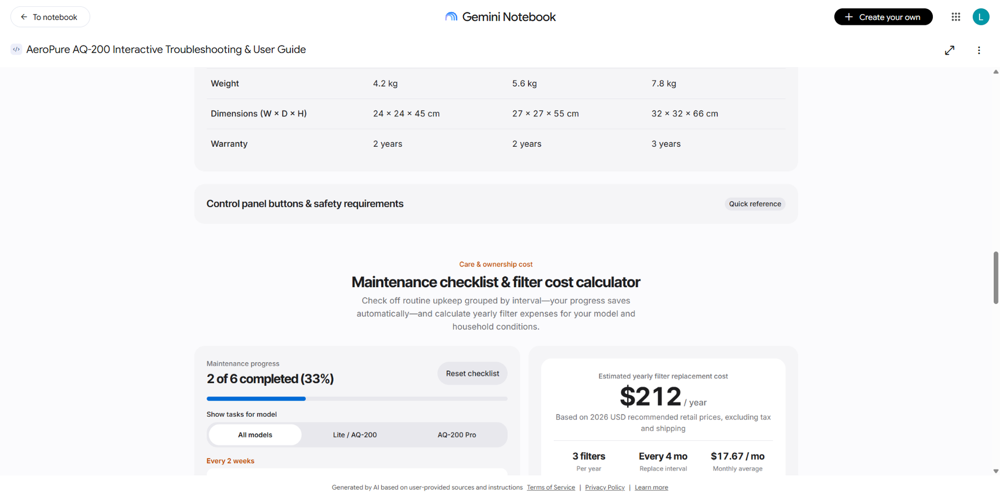

About the data: every document used in this post (the AeroPure AQ-200 and "Nimbus Home Appliances") is fictional and was generated by my own script. Every PDF page carries the banner "FICTIONAL SAMPLE – FOR DEMO ONLY". No internal or customer information was used in the demo or during testing.
1. What "make me a site" does, and why I tested it on a product manual
In Gemini Notebook (notebook.google.com) you add sources and type make me a site ... into the chat. Instead of a written answer, Notebook generates a complete HTML/JavaScript web app, saves it as an item in the Studio panel, and lets you open it in its own tab or share it.
Other posts have already used this feature to build marketing dashboards. This post takes a different angle, closer to the day-to-day reality of a software company: turning product manuals and technical documents into interactive tools (error-code lookup, maintenance checklist, cost calculator), and then measuring objectively how that differs from what development teams usually build for the same problem: a traditional RAG pipeline (chunk → embed → retrieve → LLM answer).
- Notebook path: 4 PDF manuals → Gemini Notebook → "Make me a site" → interactive web app
- RAG path: 4 PDF manuals → pypdf + chunking → gemini-embedding-2 → top-5 cosine retrieval → gemini-3.5-flash-lite answer with [S#] citations
2. Source material: a fictional four-PDF manual set
I wrote one Python file (demo-assets/sources-gen/product_data.py) that holds all product data as the single source of truth, and make_sources.py renders both Markdown and PDF versions from it. Because of that, every correct answer (ground truth) can be recomputed in code instead of being judged by eye.
| File | Contents | Used to test |
|---|---|---|
AQ-200_User_Manual.pdf | Spec table for 3 models (Lite / AQ-200 / Pro), 7-step setup, control-panel table, maintenance schedule, 9 FAQs | Lookups, model comparison |
AQ-200_Troubleshooting_Error_Codes.pdf | 15 error codes E01–E15: meaning, cause, fix, applicable models | Error-code lookup |
AQ-200_Parts_Price_List.pdf | 12 spare parts plus service fees (USD, fictional) | Multi-step questions (error → part → price) |
AQ-200_Sales_Support_Report_2026.pdf | Monthly units by model (Jan–Oct 2026), support tickets by category, resolution time, CSAT, incident notes | Dashboard, aggregation questions |
3. Step by step: generating the site in Gemini Notebook
Everything below was done in a real Chrome session (Gemini Notebook PRO account) on 20 November 2026. Button names are quoted exactly as they appear in the UI.
Step 1 – Create a notebook
Go to https://notebook.google.com/ and click + New notebook. (My personal notebook list is blurred.)

Step 2 – Rename it and open Add sources
The new notebook is called "Untitled notebook". Click the title and rename it to AQ-200 Demo – Interactive Site. Click + Add sources; the dialog offers Upload files, Websites, Play Books, Drive, Textbooks, Copied text.

Step 3 – Upload the PDFs
Choose Upload files and select the four PDFs. Measured: about 8.5 seconds until all four sources were listed in the Sources panel. Notebook writes a source summary right after.

Step 4 – Prompt "Make me a site"
Type the prompt into the "Ask a question or create something" box:
Make me a site: an interactive troubleshooting and user-guide website for the AeroPure AQ-200 air purifier series, based only on these sources. Include: (1) an error-code lookup where I can type or pick a code E01-E15 and see the meaning, cause, fix, which models it applies to, and the spare part and price if a part is needed; (2) a side-by-side comparison of the 3 models; (3) a maintenance checklist with checkboxes grouped by interval, plus a yearly filter cost calculator (model + normal/pets usage); (4) a searchable FAQ. Clean, modern, mobile-friendly design.

Step 5 – Wait for the Studio item
The chat replies almost immediately: "I've started generating your interactive troubleshooting and user-guide site … in your Studio panel". On the right, Studio shows a "Generating Site… / based on 4 sources" card. Measured: still running at 182 s and finished at 212 s, so roughly 3 to 3.5 minutes.

Step 6 – Open the site
Click the card in Studio. The site opens in a viewer with Open in new tab, Collapse, More options (⋮) and Close buttons, plus View 4 sources and Good content / Bad content.

Step 7 – Open in new tab
Click Open in new tab. The site gets its own URL (…/notebook/<id>/artifact/<id>) with To notebook and Create your own in the top bar. The content runs in a sandboxed iframe on a *.usercontent.goog domain, and the footer reads "Generated by AI based on user-provided sources and instructions".

What I tested on site A


| Check | What the site showed | Against the source |
|---|---|---|
| Look up E02 | Rated life ~2,160 h; FL-200H $39, FL-200H-2 $70, FL-200P $59; hold Filter Reset for 3 s | ✅ Correct, and it joined the error-code doc with the price list (two different PDFs) |
| Look up E03 | Plastic bag not removed, appears within the first 30 minutes, three fix steps | ✅ Correct ("No replacement parts required" is shown twice — a minor layout bug) |
| Calculator: AQ-200 Pro with pets | 3 filters/year × $59 = $177/year; ticking UV-C adds $35 | ✅ Correct (4-month interval, FL-200P $59, UV-200 $35) |
| Calculator: AQ-200 Lite, normal use | $70/year (it suggested the FL-200H-2 two-pack, saving $8) | ✅ Correct, and smarter than what I asked for |
| Model comparison | All 15 spec rows plus a "Highlight differences only" toggle | ✅ Matches the spec table |
| FAQ | 15 questions (the source has 9); 6 extra ones were rewritten from the setup and troubleshooting sections | 🟡 The content is in the sources, but it is no longer the original FAQ — worth knowing if you publish it as official documentation |
4. Second site: a sales and support dashboard
Make me a site: an interactive sales & support dashboard for the AeroPure AQ-200 series using only the monthly report (Jan-Oct 2026) and the price list. Include KPI cards (total units, revenue at list price, total tickets, average CSAT), a monthly units chart by model with a model filter, a stacked support-ticket chart by category, a CSAT vs resolution-time trend, a month range selector, and callouts that explain the March Wi-Fi spike and the August sensor spike from the report notes.
The chat confirmed after 16.8 s and the site was ready within 157 s (about 2.5 minutes) of sending the prompt. While it was generating I kept asking questions in the chat; generation runs in the background and does not block the chat.


| Dashboard KPI | Dashboard shows | Recomputed in Python |
|---|---|---|
| Total units, Jan–Oct | 17,175 | 17,175 ✅ |
| Revenue at list price | $3,878,075 | $3,878,075 ✅ |
| Total tickets / top category | 1,175 / Filter 505 | 1,175 / 505 ✅ |
| Q1 units (after filtering) | 3,790 | 3,790 ✅ |
| Average CSAT | 4.27 | 4.29 (simple mean) — the dashboard uses a ticket-weighted mean 🟡 |
| March / August callouts | Wi-Fi 22→47 (+113.6%), Sensor 21→35 (+66.7%) | ✅ Correct numbers and the correct reasons from the notes |
An interesting finding: when I asked the chat for "total units in Q1", Notebook answered 3,490, which is wrong, even though the three monthly totals it listed were all correct. The dashboard that the same Notebook generated shows 3,790, which is right, because that number is computed by JavaScript from the data table embedded in the page rather than added up in the LLM's head. That is the most important difference I found: for numbers, the site is more reliable than the chat answer.
5. Building a traditional RAG baseline on the same documents
For a fair comparison I wrote a minimal RAG pipeline (~200 lines, demo-assets/rag/rag.py) on exactly the same four PDFs:
- Extract:
pypdfpulls the text of each page. - Chunk: lines are grouped into ~900-character chunks with a 2-line overlap, giving 17 chunks.
- Embed:
gemini-embedding-2(3,072 dimensions, 4,430 tokens). A practical gotcha: this model is multimodal and merges a list of contents into a single vector, so each chunk has to be embedded in its own call. My first batched attempt returned one vector for all 17 chunks. - Retrieve: cosine similarity, top 5.
- Answer:
gemini-3.5-flash-lite, temperature 0, required to cite[S#]and to reply "Not found in the documents." when the context does not contain the answer.
cd demo-assets\rag python rag.py build python rag.py ask "Which month had the most Wi-Fi/App support tickets, how many, and what was the reason?" python rag.py eval ..\eval\questions.json
Measured: index build in 10.1 s (extract + chunk 0.04 s, embedding 10 s). Each question took 5.1–7.0 s. Total cost for 10 questions: $0.0062 (16,553 input / 497 output tokens at the flash-lite rate of $0.30 / $2.50 per 1M tokens; the embedding cost for 4,430 tokens is not included).
6. Results: 10 questions
The ten questions cover simple lookups, multi-step questions that join two documents, aggregations over the sales table, and one question that is not answerable from the documents (the AQ-300) to test hallucination. The same English questions went to the RAG script and to the Notebook chat (the same notebook that generated the sites). I scored them by hand against the source data.
| # | Type | Ground truth | Traditional RAG | Notebook chat |
|---|---|---|---|---|
| Q1 | Error code E03 | Packaging bag not removed → remove it, reinstall | ❌ "Not found" (the PDF table row was split; the chunk had "E03" but not the fix) | ✅ |
| Q2 | Pro CADR + room size | 450 m³/h; 38–55 m² | ✅ | ✅ |
| Q3 | E02 on Lite → part, price, next step | FL-200H $39; hold Filter Reset 3 s | ✅ | ✅ (also suggested the two-pack) |
| Q4 | Pro with two cats: yearly cost | 3 × $59 + $35 = $212 | ❌ "Not found" (did not retrieve both chunks) | ✅ $212 |
| Q5 | Total units in Q1 | 3,790 | ✅ 3,790 | ❌ 3,490 (addition error) |
| Q6 | Month with most Wi-Fi tickets + reason | March, 47, firmware 2.3 | ✅ | ✅ |
| Q7 | Pro revenue Jan–Oct (joins two files) | 3,285 × $349 = $1,146,465 | ❌ "Not found" (price chunk not retrieved) | ✅ |
| Q8 | Error codes only on Pro | E08, E13 | ✅ | ✅ |
| Q9 | Use in a bathroom? | No (humidity above 80%) | ❌ "Not found" (safety chunk not in top 5) | ✅ |
| Q10 | AQ-300 price and launch date (not in docs) | Decline | ✅ Declined | ✅ Declined, and said the sources only cover the AQ-200 |
| Metric | Traditional RAG | Notebook chat | Notebook sites (A + B) |
|---|---|---|---|
| Correct out of 10 | 6 | 9 | Everything I checked was correct (sections 3 and 4) |
| Invented or wrong numbers | 0 | 1 (Q5 addition) | 0 (one weighted-average choice) |
| False refusals | 4 | 0 | — |
| Citations | Yes, [S#] with file/page | Yes, clickable reference numbers | "View 4 sources" button, no per-cell citations |
| Response time | 5.1–7.0 s (median ~5.7 s) | 8.7–13.8 s (median 10.7 s) | Instant once generated (generation took ~2.5–3.5 min) |
| Measured cost | $0.0062 for 10 questions | Included in the PRO plan; tokens not visible | Included in the PRO plan |
How to read these results: my RAG is a minimal build (character-based chunking, top-5, the cheapest model, a very strict prompt). It is "safe" (it invented nothing) but gives up too often. Matching Notebook would take more work: structure-aware table parsing, chunking per row or per error code, hybrid search (BM25 + vectors), reranking, a larger k… That is the hidden cost of a home-grown RAG.
7. Notebook interactive site vs traditional RAG
| Criterion | Gemini Notebook – interactive site | Traditional RAG (self-built) |
|---|---|---|
| Output | A complete web app: lookups, filters, charts, checklists, cost calculators. Users explore it without needing to know what to ask. | A text answer per question. Users have to know what to ask. |
| Accuracy / hallucination | Data is "frozen" into the page at generation time; calculations are done in JS, so they are stable (Q1 = 3,790, correct). Risks: rewording and added content (FAQ grew from 9 to 15), formula choices (weighted CSAT) — review it once. | Depends on retrieval quality. Minimal build: 0 fabrications but 4/10 false refusals. The LLM does the math on every query. |
| Time to build | ~1 minute of clicking plus 2.5–3.5 minutes of waiting. No code. | Indexing takes 10 s, but writing and debugging the pipeline takes hours; doing it well (table parsing, reranking, a UI) takes days. |
| Sharing | Open in new tab / Share with Google accounts. Viewers use a browser; no server needed. | You host the API and UI yourself and handle auth. |
| Updating when docs change | The site is a snapshot at generation time; changed documents mean prompting again (a new artifact, possibly a different layout). | Re-run build (10 s) and answers are current; the UI stays the same. Better for documents that change often. |
| Cost | Included in the Gemini Notebook plan (PRO); per-run tokens and cost are not visible. | Pay per token, fully transparent: $0.0062 for 10 questions on flash-lite. |
| Data control | Documents and sites live on Google under your account's terms; you cannot pick the model or run on-premises. | Full control: choose the model, where the index lives, logging; you can even run a local model for sensitive data. |
| Integration | A standalone page; no API to embed it in your own product. | It is code, so it plugs into apps, chatbots, CI, Slack… |
| Best for | Fairly stable documents where other people need a tool to self-serve: user guides, error-code lookups, one-off dashboards, customer demos, onboarding. | Large, frequently changing document sets, open-ended questions, system integration and strict data control. |
8. My take
1. This is not "better RAG"; it is a different kind of output. RAG answers questions; an interactive site answers a need. From the same four PDFs, Notebook worked out on its own that an error-code table should become a search box, a maintenance schedule should become a checklist, and a price list plus replacement intervals should become a cost calculator. I did not design any UI — something RAG never does.
2. "Freezing the data into code" is an underrated strength. The Notebook chat added 3,790 up to 3,490, while its own dashboard got it right. When I need a number for a client, I will trust an interactive page that I have reviewed once over a chat answer that is regenerated every time.
3. But a site is a snapshot, not a system. There is no API, no automatic update, and regenerating can produce a different layout. For living documents (a spec that changes every week), RAG or a real system is still needed.
4. You still have to review it. The site "enriched" the content (FAQ from 9 to 15 entries, a two-pack suggestion). Most of it is grounded in the sources, but if it becomes official documentation it needs a review pass, just like AI-written code.
5. Minimal RAG is easy; good RAG is not. My 200-line pipeline was beaten by the tables inside the PDFs. Notebook handled tabular PDFs far better out of the box — and that is exactly the hard part users never have to see.
9. How I will use this in my daily work
At a software development company my work includes writing technical blog posts and proposals, building demos for clients, and reading manuals, specs and materials that clients send. Concretely:
| Task | How I would use interactive sites | Expected benefit |
|---|---|---|
| Proposals / estimates | Turn an (anonymized) effort-and-rate table into an "estimate explorer": pick modules and watch man-days and cost change. Send the link with the proposal. | Clients try scenarios themselves; fewer "what if we drop module X?" email rounds. |
| Pre-sales demos | Before a meeting, load the client's public product materials (manuals, brochures) into Notebook and generate a lookup/support prototype in five minutes to illustrate the idea. | Something clickable to discuss instead of static slides. |
| Technical blog posts | Turn benchmark data from a post (like the results tables here) into a small companion dashboard. | Readers can filter by model or criterion themselves. |
| Long specs and manuals | Turn an API spec or device manual into a lookup page (error codes, endpoints, parameters) for the project team. | Faster onboarding than reading an 80-page PDF. |
| Deciding when to build RAG | Use this post's results as a rule of thumb: stable documents + a tool for end users → Notebook site; living documents + integration or data-control requirements → RAG. | Avoid building a RAG system when a lookup page is all that is needed. |
My own security rule: only public or anonymized documents go into Notebook. Internal and client documents are processed only with pipelines I control (like the RAG in section 5) and according to company policy.